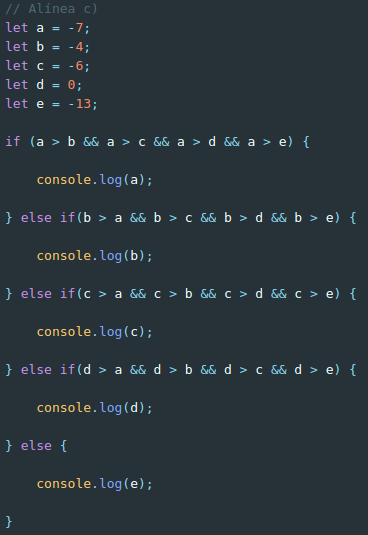

Resolução e análise à ficha de trabalho nº 2
Documento pdf associado: Ficha de trabalho nº 2
A segunda ficha de trabalho que foi realizada em aula teve como objetivo primordial introduzir tanto a mim como aos meus colegas a linguagem de programação JavaScript. Conhecendo, antes de frequentar esta cadeira, apenas alguns pontos da sintaxe da mesma e nada sabendo, à partida, acerca da sua interação com o DOM (Document Object Model) e o HTML, foi com grande gosto que tive a oportunidade de proceder à resolução dos exercícios/algoritmos presentes nesta ficha de trabalho.
Destaques a salientar:
- Na resolução da ficha, foi patente que poderiam ser utilizados os vários métodos disponíveis pelos objetos de cada tipo (tal como ".length", ".split(''), entre outros"), o que visava facilitar a busca da solução relativa aos problemas apresentados;
- Há que salientar ainda que o procedimento introdutório à linguagem teve como princípio a escrita de código JavaScript na sua versão Vanilla, isto é, na sua face mais pura, sem auxílio externo. Só mais tarde nos foi apresentada a extensão/biblioteca mais popular da linguagem, jQuery, sendo seguida uma cronologia de ensino lógica;
- De resto, tal como nesta e nas seguintes fichas de trabalho, utilizei o git para criar branches à medida que resolvia cada uma das alíneas, acabando no fim por fazer merge de todas a branches no "ramo principal", o master.
Exercício 1: Escreva um programa em JavaScript que:
- a. Compare dois números e que apresente o maior:
- Ex: 123, 321
- Resultado: 321
Resolução:
Utilizando as estruturas de controlo e os comparadores da linguagem JavaScript, procedi à resolução do exercício 1 da seguinte forma:

- b. Compare três números e apresente-os por ordem descrescente:
- Ex: 20, -5, 15
- Resultado: 20, 15, -5
Resolução:
Sabendo de antemão que o segundo exercício era mais exigente que o primeiro no que às estruturas de controlo diz respeito, procedi à seguinte resolução, a qual divido por partes na respetiva explicação:


- c. Usando estruturas de controlo (if... else...) apresente o maior de cinco números:
- Ex: -7, -4, -6, 0, 13
- Resultado: 0
Resolução:
Tendo em conta que o objetivo do exercício tratava-se de utilizar novamente estruturas de controlo para comparar cinco números diferentes e apresentar o maior deles, procedi à resolução da seguinte forma:
- d. Apresente se determinado valor é par ou ímpar de 0 a 15:
Resolução:
Utilizando a lógica e o raciocínio facilmente foi deduzido que este exercício pedia algo algo diferenciado dos anteriores, pois os números que este pretendia que fossem comparados não estavam explícitos pelo exercício, apesar de ser possível saber quais eram de forma subentendida;
Estes seriam os números de 0 a 15 e portanto seria necessário utilizar um tema novo nesta ficha de trabalho, o conceito de looping. Após cada interação do loop, seria imprimido para a consola se esse número seria par ou ímpar;
Para proceder a esta "escolha" seria também utilizado um "novo" operador, o módulo (%), que iria ser usado para comparar um número presente no intervalo obtido com o algarismo de modo, obtendo o resto da divisão (que obviamente, caso seja 0, o número tratar-se-á de um número par).